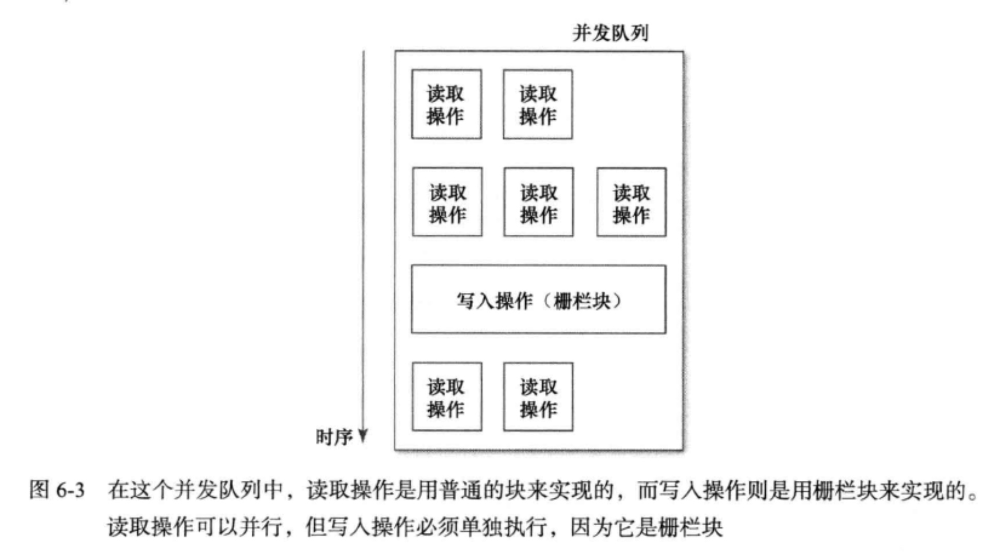

在OC中，如果有多个线程要执行同一份代码，那么有时可能会出问题。这种情况下，通常要使用锁来实现某种同步机制。在GCD出现之前，有两种办法，第一种是采用内置的“同步块”（synchronization block):
-(void)synchronizedMethod {
@synchronized(self) {
//Safe
}
}
这种写法会根据给定的对象，自动创建一个锁，并等待块中的代码执行完毕。执行到这段代码结尾处，锁就释放了。在本例中，同步行为所针对的对象是self。这么写通常没错，因为它可以保证每个对象实例都能不受干扰地运行其synchronizedMethod方法。然而，滥用 @SynChronized(self)则会降低代码效率，因为共用同一个锁的那些同步块，都必须按顺序执行。若是在self对象上频繁加锁，那么程序可能要等另一段与此无关的代码执行完毕，才能继续执行当前代码，这样做其实并没有必要。
另一种加锁的办法是NSLock对象：
_lock = [[NSLockalloc] init];
-(void)synchronizedMethod {
[_lock lock];
//Safe
[_lock unlock];
}
也可以使用NSRecursiveLock这种“递归锁’（recursive lock)，线程能够多次持有该锁，而不会出现死锁(deadlock)现象。
虽然上面两种方法可以用，但是也有一些缺陷，比如：在某些情况下，同步快会导致死锁，另外，效率不是很高。而如果直接使用锁对象的话，一旦遇到死锁，就会非常麻烦。
所以我们一般使用GCD来替代，它的优点就是可以简单，高效的为代码加锁。属性因为需要经常性的同步，所以当要线程安全的时候，加上“atomic”特质来修饰属性。
但是如果我们想要自己实现属性访问方法时，可以：
-(NSString*)someString {
@synchronized(self) {
return _someString;
}
}
-(void)setSomeString:(NSString*)someString {
@synchronized(self) {
_someString = someString;
}
}
但是滥用@synchronized(self)会很危险，因为所有同步块都会彼此抢夺同一个锁。要是有很多个属性都这么写的话，那么每个属性的同步块都要等其他所有同步块执行完毕才能执行，这也许并不是开发者想要的效果。我们只是想令每个属性各自独立地同步。
而且上述做法并不是绝对的线程安全。因为在两次访问操作之间，其他线程可能会写入新的属性值。
这里我们使用“串行同步队列”（serial synchronization queue)。将读取操作及写入操作都安排在同一个队列里，即可保证数据同步。：
_syncQueue = dispatch_queue_create("com.effectiveobjectivec.syncQueue", NULL);
-(NSString*)someString {
_block NSString *localSomeString;
dispatch_sync(_syncQueue, ^{
localSomeString = _someString;
})；
return localSomeString;
}
-(void)setSomeString:(NSString*)someString {
dispatch_sync(_syncQueue,^{
_someString = someString;
});
}
此模式的思路是：把设置操作与获取操作都安排在序列化的队列里执行（串行同步队列并不会拓展新的线程），这样的话，所有针对属性的访问操作就都同步了。（关于GCD的串行队列/并发队列与iOS多线程这里不详细讲解了，后续深入探讨）。
多个获取方法可以并发执行，而获取方法与设置方法之间不能并发执行，利用这个特点，还能写出更快一些的代码来。此时正可以体现出GCD写法的好处。用同步块或锁对象，是无法轻易实现出下面这种方案的。这次不用串行队列，而改用并发队列（concurrentquene):
_syncQueue = dispatch_get_global_queue(DISPATCH_QUEUE_PRIORITY_DEFAULT, 0);
-(NSString*}someString {
__block NSString *localSomeString;
dispatch_sync( _syncQueue, ^{
localSomeString = _someString;
})；
return localSomeString;
}
-(void)setSomeString:(NSString*)someString {
dispatch_async(syncQueue, ^{
_someString = someScring;
});
}
光是上面这些代码还不够，所有读取操作与写入操作都会在同一个队列上执行，不过由于是并发队列，所以读取与写人操作可以随时执行。而我们恰恰不想让这些操作随意执行。这就要用到栅栏（barrier)，是GCD中的一个功能：
void dispatch_barrier_async(dispatch_queue_t queue,
dispatch_block_t block);
void dispatch_barrier_sync(dispatch_queue_t queue,
dispatch_block_t block);
在队列中，栅栏块必须单独执行，不能与其他块并行。这只对并发队列有意义，因为串行队列中的块总是按顺序逐个来执行的。并发队列如果发现接下来要处理的块是个栅栏块 (barrier block)，那么就一直要等当前所有并发块都执行完毕，才会单独执行这个栅栏块。待栅栏块执行过后，再按正常方式继续向下处理。
在本例中，可以用栅栏块来实现属性的设置方法。在设置方法中使用了栅栏块之后，对属性的读取操作依然可以并发执行，但是写人操作却必须单独执行了。例如：
_syncQueue = dispatch_get_global_queue(DISPATCH_QUEUE_PRIORITY_DEFAULT, 0);
-(NSString*}someString {
__block NSString *localSomeString;
dispatch_sync( _syncQueue, ^{
localSomeString = _someString;
})；
return localSomeString;
}
-(void)setSomeString:(NSString*)someString {
dispatch_barrier_async(syncQueue, ^{
_someString = someScring;
});
}
执行的顺序如图所示：

测试一下性能，你就会发现，这种做法肯定比使用串行队列要快。注意，设置函数也可以改用同步的栅栏块(synchronous barrier)来实现，那样做可能会更髙效，其原因刚才已经 解释过了。最好还是测一测每种做法的性能，然后从中选出最适合当前场景的方案。
要点
- 派发队列可用来表述
同步语义（synchronization semantic),这种做法要比使用@synchronized块或NSLock对象更简单。 - 将同步与异步派发结合起来，可以实现与普通加锁机制一样的同步行为，而这么做却不会阻塞执行异步派发的线程。
- 使用同步队列及栅栏块，可以令同步行为更加髙效。